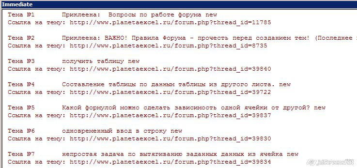

|
Функция GetQueryRange предназначена для автоматизации загрузки данных с веб-страниц. Например, нам надо из макроса Excel получить данные с нескольких однотипных страниц сайта. Самый простой способ достичь этого - выполнять почти идентичные веб-запросы (где незначительно отличаться будет только URL страницы), Поскольку количество обращений ко мне, с просьбами сделать программу загрузки данных из интернета, с каждым днём растёт, я решил сделать для этих целей универсальную функцию:
Sub ПримерИспользования() Dim ra As Range: On Error Resume Next
Set ra = GetQueryRange("http://ExcelVBA.ru/", 6) Debug.Print ra.Address ' переменная ra содержит ссылку на диапазон ячеек $A$1:$C$15, ' содержащий данные 6-й таблицы главной страницы сайта ExcelVBA.ru Set ra = GetQueryRange("http://excelvba.ru/sitemap.xml") Debug.Print ra.Address ' теперь переменная ra содержит ссылку на диапазон ячеек $A$1:$D$502, ' содержащий данные карты сайта ExcelVBA.ru End Sub При запуске функции, создаётся скрытый лист с именем «tmpWQ» (если такой лист уже есть - используется существующий), и на этом листе выполняется веб-запрос к указанному сайту. В качестве параметра можно задать номер интересующей нас таблицы сайта. Номер (или номера) требуемых страниц можно узнать, записав макрорекордером код веб-запроса к нужной веб-странице. Функция загружает данные на лист в формате HTML, - соответственно, мы можем получить доступ к гиперссылкам в результатах веб-запроса.
В большинстве случаев, эту функцию требуется использовать внутри цикла, формируя в теле цикла очередной URL, затем выполняя запрос к сформированному URL, получая необходимые данные с листа Excel, и т.д. для каждой из ссылок: Sub ЗагрузкаСпискаТемСФорума_ПланетаExcel() Dim ra As Range, cell As Range, n As Long: On Error Resume Next
For i = 1 To 10 ' формируем ссылку URL$ = "http://www.planetaexcel.ru/forum.php?forum_id=129&page_forum=" & i
Set ra = GetQueryRange(URL$, 6) ' выполняем веб-запрос ' перебирая ячейки таблицы-результата, выводим список тем в окно Immediate For Each cell In ra.Columns(2).Cells If cell.Hyperlinks.Count Then n = n + 1: Debug.Print "Тема №" & n, cell.Text Debug.Print "Ссылка на тему: " & cell.Hyperlinks(1).Address: Debug.Print End If Next cell Next i End Sub Скриншот результата этого макроса: 
Код функции GetQueryRange: Function GetQueryRange(ByVal SearchLink$, Optional ByVal Tables$) As Range On Error Resume Next: Err.Clear Dim tmpSheet As Worksheet: Set tmpSheet = ThisWorkbook.Worksheets("tmpWQ") If tmpSheet Is Nothing Then Application.ScreenUpdating = False Set tmpSheet = ThisWorkbook.Worksheets.Add tmpSheet.Name = "tmpWQ" tmpSheet.Visible = xlSheetVeryHidden End If If tmpSheet Is Nothing Then msg$ = "Не удалось добавить скрытый лист «tmpWQ» в файл программы" MsgBox msg, vbCritical, "Невозможно выполнить запрос к сайту": End End If
tmpSheet.Cells.Delete: DoEvents: Err.Clear With tmpSheet.QueryTables.Add("URL;" & SearchLink$, tmpSheet.Range("A1")) If Len(Tables$) Then .WebSelectionType = xlSpecifiedTables .WebTables = Tables$ Else .WebSelectionType = xlEntirePage End If .FillAdjacentFormulas = False: .PreserveFormatting = True .RefreshOnFileOpen = False: DoEvents .WebFormatting = xlWebFormattingAll .Refresh BackgroundQuery:=False: DoEvents If Err = 0 Then Set GetQueryRange = tmpSheet.UsedRange .Delete: DoEvents End With End Function
|